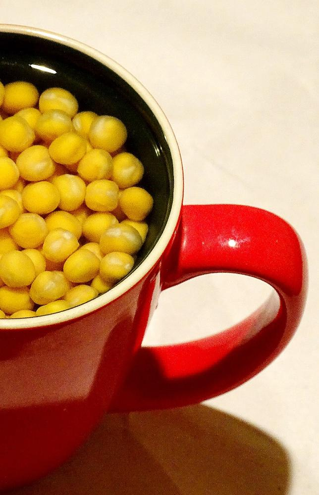
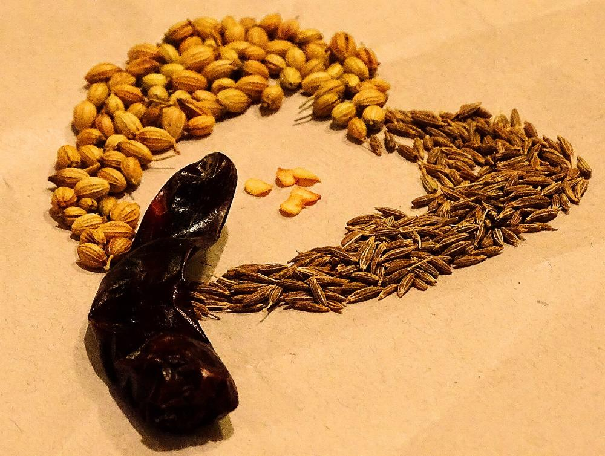
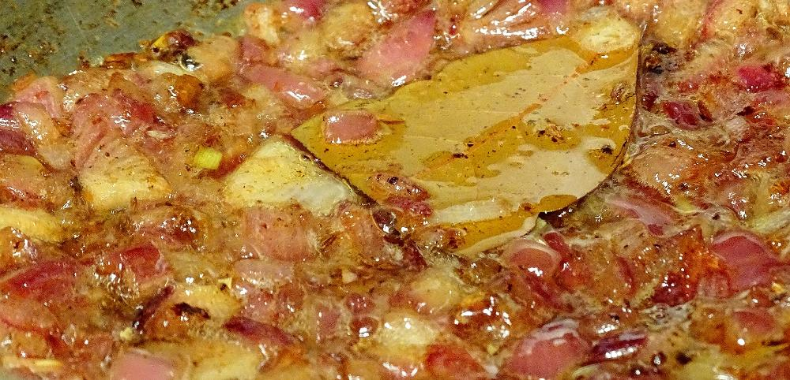
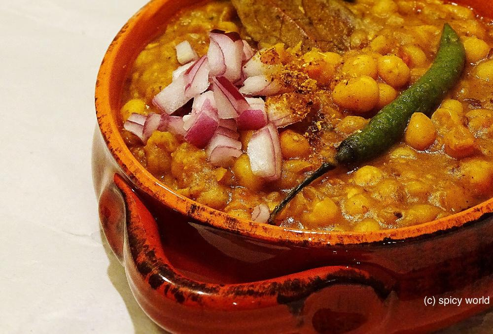

Ghugni or Yellow peas curry

This is almost impossible to find them, who does not love street food and specially 'ghugni' from train vendors. But 'ghugni' also plays a different role along with 'nimki'and 'naaru' during BIJOYA dashami. From childhood I am a big fan of my mom's cooking. I think you already understand that this one is also from my mom's diary :-)

Ingredients
- Yellow peas 1 small bowl.
- 1 big onion finely chopped.
- Ginger garlic paste 1 Teaspoon.
- 1 medium size tomato chopped.
- 2 green chilies.
- Cumin seeds 3 Teaspoons.
- Coriander seeds 2 Teaspoons.
- One bay leaf.
- One dry red chili.
- Spice powder (Red chili powder 1 Teaspoon, Garam masala powder 1 Teaspoon,Turmeric powder 1 Teaspoon).
- Salt and suger as per your taste.
- Warm water.
- Mustard oil 6 Teaspoon.
- Some chopped coriander leaves.

Steps
Soak the yellow peas overnight into the water or atleast 5 hours.

Add the soaked peas into a pressure cooker with water and give pressure for 10 minutes. Do not make it mushy.

Dry roast 2 Teaspoons cumin seeds, 2 Teaspoons coriander seeds and 1 dry red chilli in a pan for 10 minutes. Let it cool down and then blend it to powder. It is called 'bhaja masala'. This dry masala is must for ghugni.

Now heat mustard oil in a pan.
Add cumin seeds and bay leaf. Saute it for a minute.
Add the chopped onion with pinch of salt. Fry it for 7 mins. Make the onion golden in color.

Then add the ginger and garlic paste. Cook it for 3 minutes.
Add the chopped tomato. Cook it for 5 minutes.
Now add the above mentioned spice powder. Cook it for 3 minutes.
Add green chilies, salt and sugar. Mix it.

Now add boiled peas along with the water. Mix it for 5 minutes. If the curry becomes dry you can add some warm water.

Cover the pan and cook it for another 10-15 minutes.
Check the seasoning and consistancy of ghugni.
When its done add some chopped coriander leaves and 1 Teaspoon of that 'bhaja masala' or dry roast powder. Mix it and turn off the heat.

Your ghugni is ready to serve.
- Serve hot with roti, naan.


Leave Your Comments